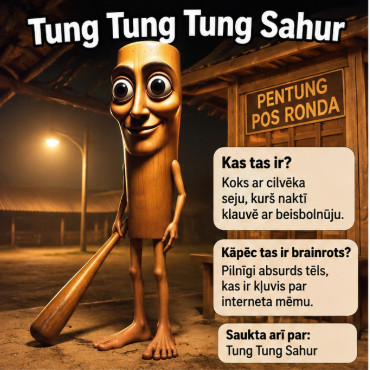
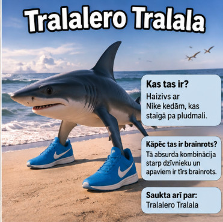
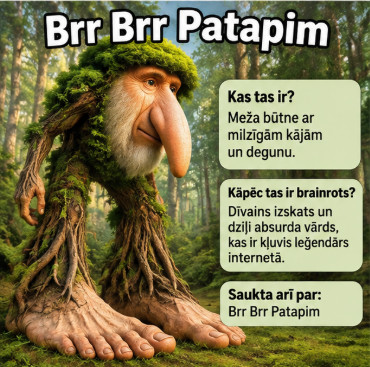

| Tung tung sahur |  |
Izskats: koka cilvēciņš ar lielām acīm un nūju. Raksturs: dīvains un noslēpumains tēls. Kāpēc brainrot? Smieklīgais izskats un atkārtojamais vārds padarīja to par interneta mēmu. |
|---|---|---|
| Tralalelo tralala |  |
Izskats: haizivs ar zilām sporta kurpēm. Raksturs: jocīgs un absurds. Kāpēc brainrot? Neparastā haizivs un lipīgais nosaukums kļuva populāri internetā. |
| Brr brr patapim |  |
Izskats: meža radījums ar lielu degunu un kokiem līdzīgu ķermeni. Raksturs: savāds un smieklīgs. Kāpēc brainrot? Dīvainais tēls un nosaukums ir raksturīgi Italian Brainrot mēmiem. |